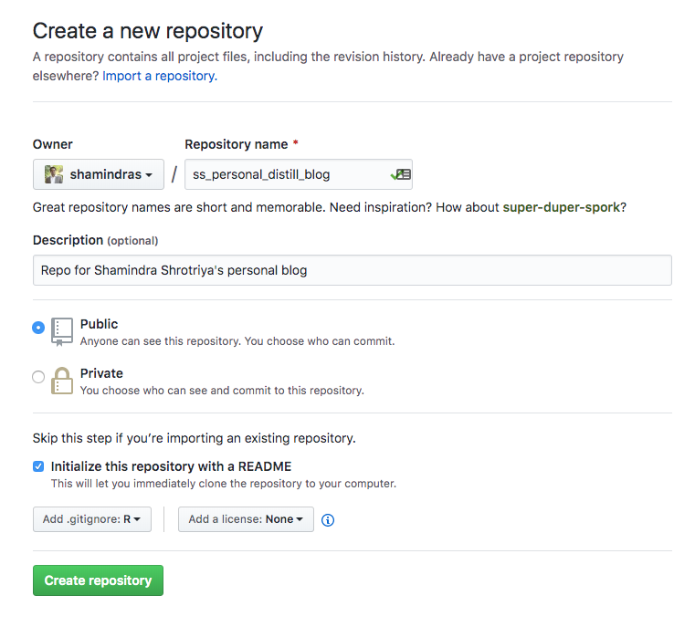
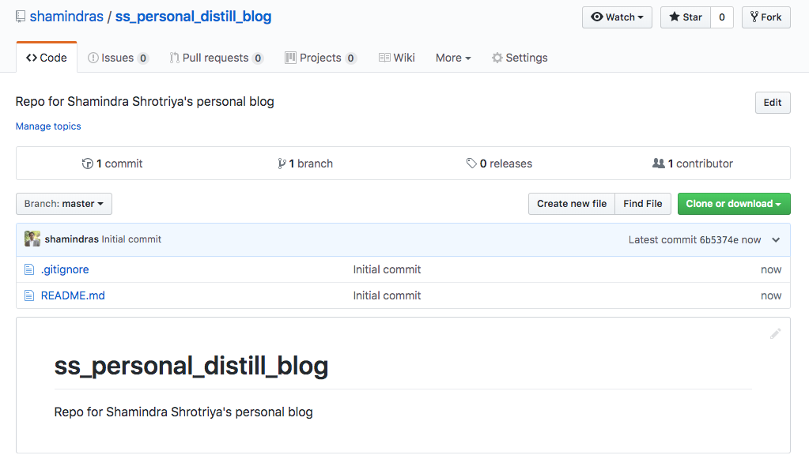
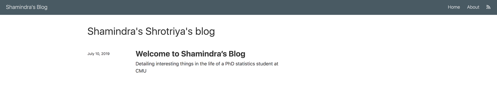
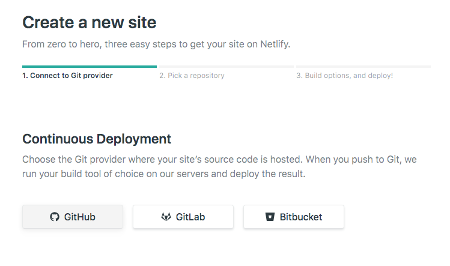
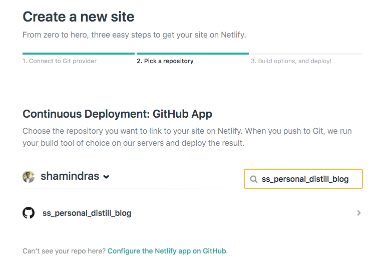
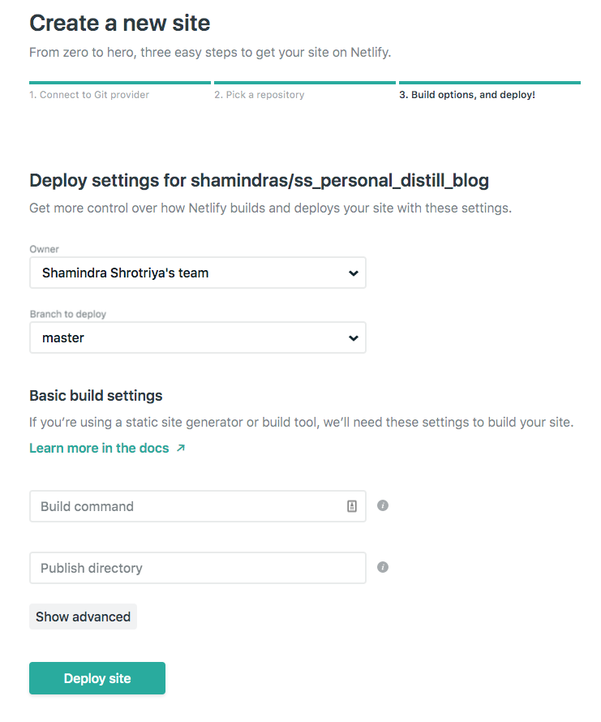
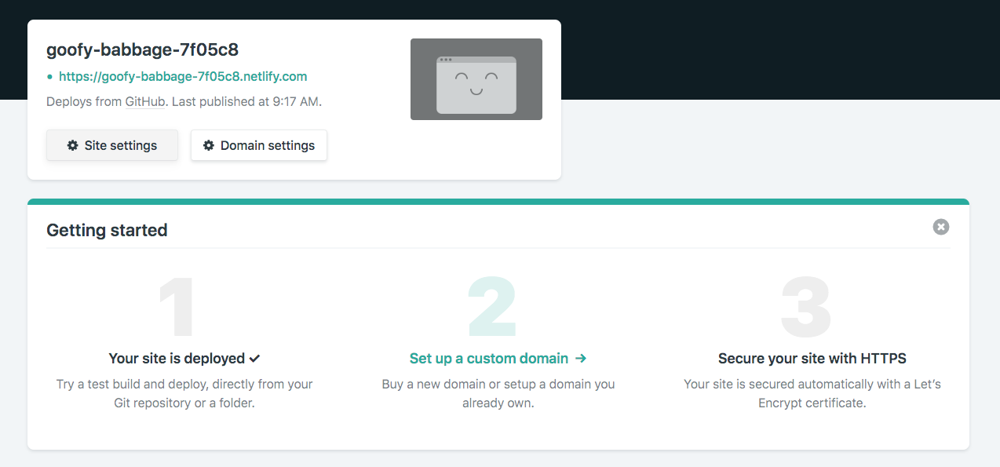
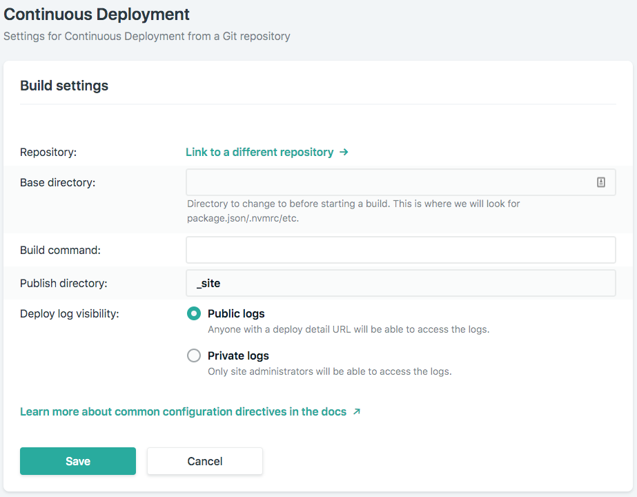
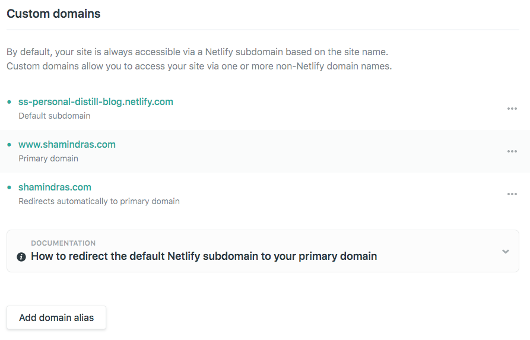

git clone git@github.com:shamindras/ss_personal_distill_blog.gitStep 0: Introduction
This is a meta blogpost to describe how I setup this personal academic blog. It is based on the relatively new distill package by the RStudio team. The main tools used I used to create this blog are:
- My personal Github account
- The RStudio editor
- The
Rpackagesdistillandhere - A macbook pro (2017 edition) and the iterm2 terminal
- My personal netlify account and also my personal domain bought from Google Domains
The details of how I used the tools used are all noted below in a step-by-step manner.
Importantly, I should note that the RStudio distill team has already created an excellent distill blog creation tutorial which I thoroughly used and highly recommend to new users. I wrote this meta blogpost in my own words so that I can personally remember the details going forward. I also added more details on deployment with Google Domains and Netlify that would hopefully be useful to new R users waiting to deploy a similar distill blog.
Step 1: Create new distill blog repo
I opted to manage my blog versioning using Git/Github. I started by going to my personal github account and create a new repository. I called mine ss_personal_distill_blog and also initialized it with a README.md and included an .gitignore for R since that will the blogging language of choice here 😄. This is shown in the screenshot below.

Once created the repo will appear in github as seen in the following screenshot

Step 2: Clone the repo locally
With the github repo created, I switched locally on my mac to iterm2 terminal and cloned the repo locally using the following command:
And the cloning quickly finished with the following output
Cloning into 'ss_personal_distill_blog'...
remote: Enumerating objects: 4, done.
remote: Counting objects: 100% (4/4), done.
remote: Compressing objects: 100% (4/4), done.
remote: Total 4 (delta 0), reused 0 (delta 0), pack-reused 0
Receiving objects: 100% (4/4), done.Now I simply changed into the newly cloned blog directory by running the following terminal command:
cd ss_personal_distill_blogI then ran the following terminal command:
treeThis resulted in the following directory structure so far:
.
├── .git
├── .gitignore
└── README.mdGreat, now the repo was setup locally. At this stage there is just a simple README.md which will get added to a bit later, but the main focus is to start creating the distill blog within this directory locally.
Step 3: Create the distill blog files
In order to start creating the blog contents I opened up an instance of RStudio from within my new directory on my macbook via the following terminal command:
open -a /Applications/RStudio.app .With RStudio opened we can now run the following R commands in just the console to create the install the required and distill blog setup packages:
Now we can create our blog using the following 2 commands from the freshly installed distill package using the following command run in the console
distill::create_blog(dir = here::here(),
title = "Shamindra's Shrotriya's blog",
gh_pages = TRUE)Note that we set gh_pages = TRUE to ensure that we can host this blog on github pages down the line if needed. You can omit this if you don’t want the option to have github pages as your host in the future. I will be using Netlify to host my blog (see below), but it is good to have an additional host option in the future.
My local distill blog directory now looked like this (again after running the tree command in the terminal):
.
├── .git
├── .gitignore
├── .nojekyll
├── README.md
├── _posts
├── _site.yml
├── about.Rmd
├── docs
├── index.Rmd
└── ss_personal_distill_blog.RprojPretty cool! Note that there is a newly created _posts directory for future blogposts. And there is a directory called docs to store all our processed blogposts later. If we had set gh_pages = FALSE the docs directory would be automatically replaced by a _site directory. More on this point later.
Step 4: Customize the welcome blogpost
So distill already had us underway with a default welcome blogpost contained in the welcome.Rmd file for us. There are a bunch of javascript related files automatically generated in the _posts/welcome/welcome_files directory but these don’t need to be altered by the user. I just needed to modify welcome.Rmd contents per my preference as with any regular Rmd file and click Knit in RStudio to refresh it. We can see this in the _posts directory:
./_posts/welcome
├── welcome.Rmd
├── welcome.html
└── welcome_filesOne thing that slightly bothered me is that the default welcome blogpost has no date prefix in the directory. This would be nice to have in order to sort all future blogposts chronologically. I could’ve modified this default welcome blogpost Rmd and directory to include the date prefix manually. For simplicity I opted to delete the default welcome directory altogether and recreated it with the date prefix as I prefer as detailed below.
To delete the default welcome directory, I just ran the following code at my terminal:
rm -rf _posts/welcomeWith the default welcome blogpost deleted, I created my own custom welcome blogpost as follows:
distill::create_post(title = "Welcome to Shamindra’s Blog",
author = "Shamindra Shrotriya",
date_prefix = TRUE)Now the welcome blogpost has this nice date prefix structure since we passed this option as TRUE. Let’s see what the _posts directory looks like now
_posts/2019-07-10-welcome-to-shamindras-blog
└── welcome-to-shamindras-blog.Rmd`Neat - just how I like it! I then modified the content of the new welcome blogpost by going to the following file:
_posts/2019-06-21-welcome-to-shamindras-blog/welcome-to-shamindras-blog.RmdI modified the contents and then knitted the Rmd file once done to refresh and save the contents.
Now I had locally created my first personalized content, a simple welcome post 😎.
Step 5: Customize your blog layout
Now I needed to customize the blog header banner and setup links and update contents as required.
We will start with the _site.yml contents which controls the page layout. I modified the _site.yml file which contains default metadata settings for the blog to have the following contents:
name: "test_distill_blog"
title: "Shamindra's Blog"
description: |
Shamindra Shrotriya's personal blog/ site. Some fun posts
on math, statistics and the PhD student life.
output_dir: "_site"
navbar:
right:
- text: "Home"
href: index.html
- text: "About"
href: about.html
- icon: fa fa-rss
href: index.xml
collections:
posts:
share: [twitter, linkedin]
base_url: https://www.shamindras.com/
output: distill::distill_articleI updated the About.Rmd file as required and knit it. This is a default Rmd that distill conveniently creates this file to give readers some background on the site purpose and of course about the author.
No need to update the default distill Index.Rmd file that is automatically created. I simply opened it and knit it manually in RStudio to update the site contents.
I also updated the README.md to add some useful information (for any users who stumble onto the github page) and saved it. No need to knit anything here as it is a simple markdown file.
Now in Rstudio I just knit the welcome.Rmd post and also ran the following command in the console
rmarkdown::render_site(input = here::here())The locally created distill blog was now created and rendered and looked like this in the RStudio viewer pane:

Pretty cool - I now had a working local version of our blog in RStudio.
Step 6: Commit and push changes to github
Note that all our changes are so far in our local git repo. We need to get this blog online! A first step is to commit and push them to our github repo. I did this in my local directory in the terminal as follows: in git at my terminal as follows:
git add -A # Add all new changes
git commit -m "ENH: Created welcome post with date prefix, deleted default post"
git push origin masterAnd the changes are now reflected in the github master branch!
Step 7: Buy a Domain name (optional)
Although the blog was our blog contents are in a public online place i.e. github, I just needed to link it to a service that deploys websites from github. But first I needed to go buy a domain name for my blog. I went to Google Domains and bought www.shamindras.com for about $15/yr.
There are free alternatives e.g. Github Pages, but I wanted to have ownership on my page and found the annual fee to be reasonable with Google Domains.
Step 8: Deploy your website with Netlify
Now that the domain name is bought, I just needed to deploy the newly created blog contents on the registered domain name. Enter netlify! This is a free (and awesome) deployment service. I created a personal account following the intructions on Netlify website.
I then logged in to Netlify and clicked on the green New site from Git button to get started. In the following menu I clicked the Github Continuous Deployment icon:

I then manually searched for my blog repo i.e. ss_personal_distill_blog. Initially this did not appear, so I clicked the green Configure the Netlify app on GitHub link at the bottom and gave Netlify permissions to access this site. This is so Netlify can automatically sync with the github repo and deploy changes going forward as I make them directly to my github blog repo.

I clicked on my site that appears and then ensured that I selected to ensure that the Branch to Deploy option is set to master.

I then clicked Deploy Site and then saw the following deployment settings:

I clicked thee Site Settings button. Looks like my site name on Netlify is goofy-babbage-7f05c8. Cute, though I’ll personalize by clicking the Change Site Name button. I changed it to ss-personal-distill-blog for my easy reference.
I clicked the Build and Deploy button next and after clicking the Edit Settings button modified the Publish directory to be _site as shown below:

This is where all our blogposts in our github repo will be rendered to html by distill once we knit them. Netlify will just pick them up from here everytime you refresh them and deploy our website accordingly
Next I need to manage the domain i.e. tell Netlify to deploy my site on the custom domain I just purchased from Google Domains.

After clicking verify we have the following domains now set, with www.shamindras.com being the primary domain.

Netlify also tells me that the truncated url shamindras.com will also get routed to the blog. So I don’t event need to write the www. going forward. Thanks Netlify 🙇♀.
Step 9: Patiently wait for deployment
With everything setup and configured on github/Netlify the deployment should be near instantaneous. But after about 20 mins my blog appeared at www.shamindras.com. So effectively Netlify and github were now talking to each other and site is setup!
Step 10: Future additions and extras
Now that the blog/site is created there are a number of features I’d like to add. The most important being more blogposts and personal content. However it would also be nice to have the following features:
- Documenting a general
distillblogging workflow - Setting up Disqus to enable user comments on blogposts
- How to setup Blog Gallery for featured posts
- How to setup an email subscription service for this blog
- How to setup Google Analytics service for basic user activity tracking
I will make sure to document the setup process as part of a series of future blog posts
Concluding Thoughts
If you managed to read this far, then I sincerely thank you. I hope to make even better technical and personal blogposts going forward. Please feel free to leave a friendly comment below for any questions you may have or any feedback for future blogposts.
Reuse
Citation
BibTeX citation:
@online{shrotriya2019,
author = {Shamindra Shrotriya},
title = {Setting up a {Distill} {Blog} with {Netlify}},
date = {2019-07-11},
url = {https://www.shamindras.com/posts/2019-07-11-shrotriya2019distillpt1},
langid = {en}
}
For attribution, please cite this work as:
Shamindra Shrotriya. 2019. “Setting up a Distill Blog with
Netlify.” July 11, 2019. https://www.shamindras.com/posts/2019-07-11-shrotriya2019distillpt1.